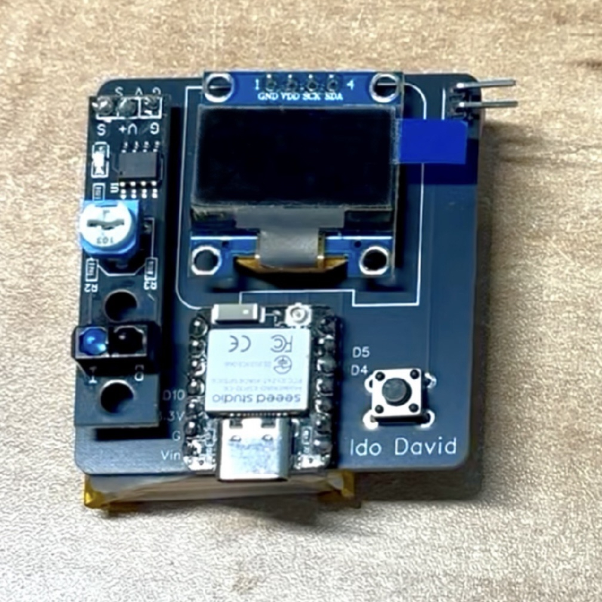
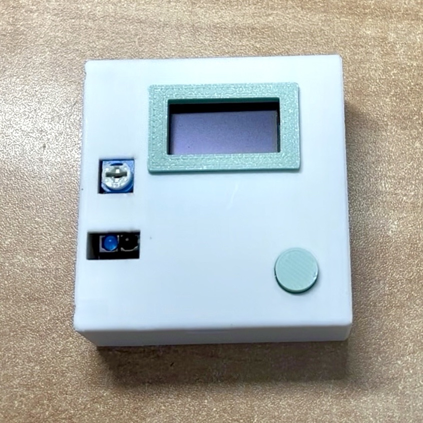
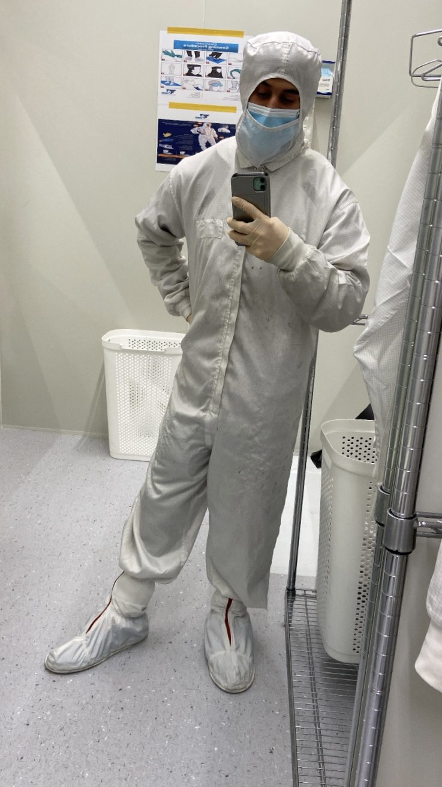

Ido David
Mechatronics & Mechanical Engineer
Mechatronics & Mechanical Engineer

Developed a hybrid quadruped-wheeled robot featuring an active self-stabilization system utilizing a Control Moment Gyroscope (CMG).
For my final research project, I developed a hybrid quadruped wheeled robot. The goal of the study was to examine the effect of integrating a Control Moment Gyroscope (CMG) as an additional active stabilization element for improving the robot’s stability.
The robotic system includes a Proportional controller for correcting the robot’s lateral tilt. In addition, the CMG system generates active control moments to provide further stabilization.
As part of the research, experiments were conducted with and without the CMG system, while applying controlled dynamic disturbances, in order to evaluate its contribution to improving the robot’s dynamic stability.


Designed and manufactured a custom PCB for an Infra Red-based rotational speed sensor.
Designed and manufactured a custom PCB for an Infra Red-based rotational speed sensor. The system integrates an OLED display for real-time data visualization and a custom 3D-printed enclosure.
The sensor system is highly capable and engineered to accurately sample rotational speeds up to a maximum of 15,000 RPM.



Designed and 3D modeled in SolidWorks a robotic arm featuring a red LED end-effector, tracing mathematical equations via long-exposure photography.
To achieve accurate 3D spatial positioning and trace the desired mathematical functions, the servo motors were meticulously mapped and calibrated. Given a target coordinate $(x, y, z)$ and the arm's link lengths $L_2$ (bicep) and $L_3$ (forearm), the precise joint angles $\theta_1$, $\theta_2$, and $\theta_3$ are derived using the following Inverse Kinematics model:

Designed a two-wheeled self-balancing robot utilizing a custom-tuned PID controller.
Designed and built a self-balancing robot, including mechanical design in SolidWorks, 3D printing, and full system integration.
Implemented a real-time control system using a PID controller based on tilt angle measurements from a gyroscope. Sensor data was filtered using a Kalman Filter to reduce noise and improve stability.
I am an engineer specializing in Mechatronics and Robotics. Combining a B.Sc. in Mechanical Engineering with a Mechatronics Practical Engineer diploma, I thrive at the exact intersection of hardware, electronics, and code. At heart, I am a hands-on "maker." From building quadruped robots from scratch to designing custom PCBs and 3D-printing parts, my passion is bringing complex ideas to life. I love the multidisciplinary challenge of making mechanics, sensors, and software work perfectly together.
1 year of hands-on industry experience as an Electro-Mechanical and Opto-Mechanical Integrator in the semiconductor field. Working inside Class 1000 cleanrooms, he assembled, calibrated, and troubleshooted high-precision systems. This role gave him a strong foundation in real-world manufacturing, system-level problem-solving, and strict quality standards.

Feel free to reach out for professional opportunities or collaborations:
Email: idodavid2244@gmail.com
Phone: 052-4280941
Connect on LinkedIn